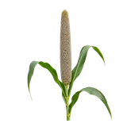

होम / बाजरा

बाजरा का भाव आज | Bajra Mandi Price Today
बाजरा के आज के उपलब्ध मंडी भाव देखें—नागौर, बीकानेर, मथानिया, जोधपुर और डीसा के मॉडल, न्यूनतम और अधिकतम रेट।
नीचे मंडी-वार सूची में बाजरा के उपलब्ध भाव दिए हैं। मंडी के नाम पर क्लिक करके उस मंडी की दूसरी फसलों के भाव भी देख सकते हैं।
बाजरे के मंडी भाव को तय करने वाले प्रमुख कारक और सर्वोत्तम भाव पाने के सुझाव
राम राम किसान भाइयों! भारतीय कृषि और मोटे अनाजों (Millets / श्री अन्न) के बाजार में बाजरा (Pearl Millet) खरीफ सीजन की सबसे प्रमुख और किसानों की मुख्य नकदी व आहार फसल है। राजस्थान, हरियाणा, उत्तर प्रदेश, गुजरात और महाराष्ट्र के बारानी व सिंचित क्षेत्रों में बाजरे का उत्पादन सबसे बड़े पैमाने पर होता है। दैनिक खान-पान के अलावा पोल्ट्री फीड (मुर्गी दाना), पशु आहार, शराब/स्टार्च उद्योग और श्री अन्न मिशन के तहत सुपरफूड के रूप में बढ़ती मांग के कारण देशभर की मंडियों में बाजरे का व्यापार हमेशा सक्रिय रहता है।
बाजरे के मंडी भाव को तय करने वाले प्रमुख कारक
मंडियों में बाजरे के भाव केवल स्थानीय उत्पादन पर निर्भर नहीं करते, बल्कि कई व्यावहारिक और बाजार संबंधी कारणों से तय होते हैं:
उपयोग और गुणवत्ता के आधार पर मांग (खपत बनाम पोल्ट्री/फीड)
- खाने योग्य बाजरा (Food Grade): साफ, चमकदार, हरे-भूरे रंग का और बिना बारिश में भीगा हुआ बाजरा घरेलू खान-पान और पैकेज्ड फूड बनाने वाली कंपनियों द्वारा सबसे ऊंची कीमत पर खरीदा जाता है।
- फीड और डिस्टिलरी ग्रेड (Feed Grade): यदि दाना थोड़ा फीका हो या बारिश से प्रभावित हो, तो उसे पोल्ट्री फीड व अल्कोहल उद्योग कम भाव पर खरीदते हैं।
नमी और दाने की चमक
- कटाई और गहाई के समय बाजरे में नमी की मात्रा भाव तय करने में सबसे अहम भूमिका निभाती है।
- 12% से कम नमी वाले सूखे और कड़क दाने के लिए व्यापारी प्रतिस्पर्धी बोलियां लगाते हैं। अधिक गीले या फफूंद लगे माल पर भाव में भारी कटौती की जाती है।
सरकारी समर्थन मूल्य (MSP) और खरीद व्यवस्था
- केंद्र सरकार द्वारा बाजरे का न्यूनतम समर्थन मूल्य (MSP) अन्य मोटे अनाजों की तुलना में काफी आकर्षक रखा जाता है।
- जब राज्य सरकारें (विशेषकर हरियाणा और राजस्थान) समर्थन मूल्य या भावांतर योजना के तहत खरीद प्रक्रिया सक्रिय करती हैं, तो खुले बाजार में भी व्यापारियों पर भाव सुधारने का दबाव बनता है।
मक्का और टूटे चावल (Broken Rice) के भाव
- फीड इंडस्ट्री में मक्का और बाजरा एक-दूसरे के विकल्प के तौर पर काम करते हैं। जब पोल्ट्री और स्टार्च सेक्टर में मक्के के भाव ऊंचे होते हैं, तो बाजरे की औद्योगिक मांग अचानक बढ़ जाती है, जिससे मंडियों में तेजी देखने को मिलती है।
सीजनल आवक का दबाव
- सितंबर से नवंबर के दौरान जब नई फसल एक साथ मंडियों में उतरती है, तो भारी आवक के चलते भाव कुछ समय के लिए दबाव में आ जाते हैं। सर्दियों के आगमन के साथ खान-पान में मांग बढ़ने पर कीमतों में दोबारा सुधार आता है।
बाजरे का सर्वोत्तम भाव पाने के लिए किसान भाइयों को सुझाव
- उचित सुखाने के बाद ही बिक्री: गहाई के तुरंत बाद बाजरे को पक्के फर्श या तिरपाल पर फैलाकर अच्छी तरह धूप में सुखाएं। सूखा दाना सुरक्षित रहता है और व्यापारी बिना हिचकिचाहट के अधिकतम बोली लगाते हैं।
- सफाई और छंटाई: थ्रेशर से निकालने के बाद छलने या पंखे से कचरा, मिट्टी और खोखले दाने अलग कर लें। एक समान और साफ दाना सामान्य माल से ₹50 से ₹100 प्रति क्विंटल तक अधिक दाम दिलाता है।
- नमी से बचाव: कटाई के बाद फसल को भीगने से बचाएं। बारिश में भीगने से दाने पर कालापन आ जाता है, जिससे उसकी सीधी गिनती फीड ग्रेड में हो जाती है और भाव कम मिलता है।
- मंडियों के मॉडल भाव की तुलना: अपनी स्थानीय मंडी के साथ-साथ राज्य की प्रमुख मंडियों के दैनिक मॉडल भाव और आवक के रुख पर नजर रखकर ही अपनी उपज की बिक्री का सही समय तय करें।
बाजरे का मॉडल भाव क्या होता है
मंडी भाव की तालिका में न्यूनतम और अधिकतम भाव के बीच एक मॉडल भाव भी दिया जाता है। मॉडल भाव उस भाव को कहते हैं जिस पर उस दिन मंडी में सबसे ज्यादा सौदे हुए। इसलिए सामान्य माल बेचने वाले किसान भाइयों के लिए मॉडल भाव, सबसे ऊंचे अधिकतम भाव के मुकाबले, अपने माल के रेट का बेहतर अंदाजा देता है।
बाजरे का MSP और मंडी भाव में अंतर
- MSP सरकार द्वारा तय किया गया न्यूनतम समर्थन मूल्य है, जबकि मंडी भाव रोज़ मांग और आपूर्ति के हिसाब से बदलने वाला खुले बाजार का रेट है।
- जब मंडी में बाजरे का भाव MSP से नीचे चला जाए, तब सरकारी खरीद का विकल्प किसान भाइयों के लिए खास तौर पर काम आता है।
बाजरे का दैनिक भाव और बाजार का रुख
बाजरे के बाजार भाव में दैनिक आवक, मौसम और औद्योगिक मांग के अनुसार निरंतर उतार-चढ़ाव होते रहते हैं। बाजार के रुझान और माल की गुणवत्ता को परखकर सौदा करने से किसान भाई अपनी उपज का वाजिब और पूरा मूल्य प्राप्त कर सकते हैं।
अक्सर पूछे जाने वाले सवाल
100 किलो बाजरा का भाव क्या है?
100 किलो यानी 1 क्विंटल बाजरा का भाव विभिन्न कृषि उपज मंडियों में गुणवत्ता और आवक के आधार पर तय होता है। अलग-अलग मंडियों में 100 किलो बाजरे के उपलब्ध नवीनतम उपलब्ध भाव जानने के लिए हमारी वेबसाइट पर ऊपर दी गई टेबल देखें, जहाँ दैनिक आधार पर न्यूनतम और अधिकतम भाव अपडेट किए जाते हैं। हमसे जुड़े रहने के लिए हमारा WhatsApp ग्रुप जॉइन करें।